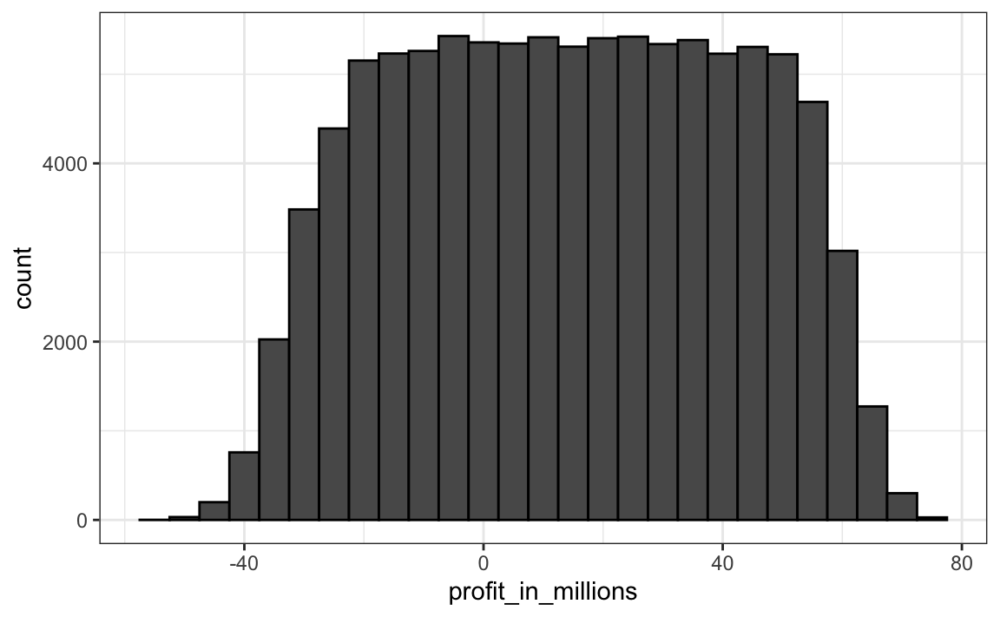

Capítulo 14 Variáveis aleatórias
Na ciência de dados, geralmente trabalhamos com dados que são afetados de alguma forma por acaso. Alguns exemplos são dados provenientes de uma amostra aleatória, dados afetados por um erro de medição ou dados que medem um resultado de natureza aleatória. Ser capaz de quantificar a incerteza introduzida pela aleatoriedade é um dos trabalhos mais importantes dos analistas de dados. A inferência estatística oferece uma estrutura, bem como várias ferramentas práticas para isso. O primeiro passo é aprender a descrever matematicamente variáveis aleatórias.
Neste capítulo, apresentamos variáveis aleatórias e suas propriedades começando com sua aplicação em jogos de azar. Em seguida, descrevemos alguns dos eventos que cercam a crise financeira de 2007-200847 usando a teoria da probabilidade. Essa crise financeira foi causada em parte pela subestimação do risco de certos valores mobiliários vendidos por instituições financeiras. Especificamente, os riscos de títulos lastreados em hipotecas (MBSs) e obrigações de dívida colateralizada (CDOs) foram amplamente subestimados. Esses ativos foram vendidos a preços que muitos proprietários esperavam que pagassem pontualmente, e a probabilidade de que isso não ocorresse foi calculada como baixa. Uma combinação de fatores resultou em muito mais inadimplências do que o esperado, levando a uma queda nos preços desses títulos. Como conseqüência, os bancos perderam tanto dinheiro que precisavam de resgates do governo para evitar o fechamento completo.
14.1 Variáveis aleatórias
Variáveis aleatórias são os resultados numéricos de processos aleatórios. Podemos facilmente gerar variáveis aleatórias usando alguns dos exemplos acima. Por exemplo, defina X será 1 se a conta (bead em inglês) for azul e 0 caso contrário:
Aqui X é uma variável aleatória: toda vez que selecionamos uma nova conta, o resultado muda aleatoriamente. Olhar para baixo:
ifelse(sample(beads, 1) == "blue", 1, 0)
#> [1] 1
ifelse(sample(beads, 1) == "blue", 1, 0)
#> [1] 0
ifelse(sample(beads, 1) == "blue", 1, 0)
#> [1] 0Às vezes é 1 e às vezes é 0.
14.2 Modelos de amostragem
Muitos procedimentos de geração de dados, aqueles que produzem os dados que estudamos, podem ser modelados relativamente bem como escolhas de urnas. Por exemplo, podemos modelar o provável processo de votação dos eleitores, como obter 0s (republicanos) e 1s (democratas) de uma urna que contém os códigos 0 e 1 para todos os prováveis eleitores. Em estudos epidemiológicos, geralmente assumimos que os sujeitos de nosso estudo são uma amostra aleatória da população de interesse. Os dados relacionados a um resultado específico podem ser modelados como uma amostra aleatória de uma urna contendo o resultado para toda a população de interesse. Da mesma forma, na pesquisa experimental, geralmente assumimos que os organismos individuais que estamos estudando, por exemplo, vermes, moscas ou ratos, são uma amostra aleatória de uma população maior. Experimentos aleatórios também podem ser modelados, selecionando uma urna, dada a maneira como os indivíduos são designados para grupos: quando designados, o grupo é escolhido aleatoriamente. Os modelos de amostragem são, portanto, onipresentes na ciência de dados. Os jogos de cassino oferecem um grande número de exemplos de situações do mundo real nas quais modelos de amostragem são usados para responder a perguntas específicas. Portanto, começaremos com esses exemplos.
Suponha que um cassino muito pequeno o contrate para ver se eles devem incluir roletas em seus jogos. Para simplificar o exemplo, assumiremos que 1.000 pessoas jogarão e que a única aposta que podem fazer na roleta é apostar em vermelho ou preto. O cassino quer que eles prevejam quanto dinheiro ganharão ou perderão. Eles querem uma gama de valores e, em particular, querem saber qual é a probabilidade de perder dinheiro. Se essa probabilidade for muito alta, eles não instalarão roletas.
Nós vamos definir uma variável aleatória \(S\) que representará o total de ganhos do cassino. Vamos começar construindo a urna. Uma roleta tem 18 bolsos vermelhos, 18 bolsos pretos e 2 verdes. Portanto, jogar uma cor em um jogo de roleta é equivalente a escolher na caixa a seguir:
Os 1.000 resultados de 1.000 pessoas jogando são empates independentes desta urna. Se aparecer vermelho, o jogador ganha e o cassino perde um dólar, então empatamos um - $1. De otra manera, el casino gana un dólar y sacamos un $ 1. Para construir nossa variável aleatória \(S\), podemos usar este código:
n <- 1000
X <- sample(ifelse(color == "Red", -1, 1), n, replace = TRUE)
X[1:10]
#> [1] -1 1 1 -1 -1 -1 1 1 1 1Como sabemos as proporções de 1s e -1s, podemos gerar as eleições com uma linha de código, sem definir color:
Chamamos isso de modelo de amostragem, pois estamos modelando o comportamento aleatório da roleta com a amostragem das opções das urnas. Ganhos totais \(S\) eles são simplesmente a soma desses 1.000 empates independentes:
14.3 A distribuição de probabilidade de uma variável aleatória
Se você executar o código acima, verá que \(S\) muda sempre. Isto é porque \(S\) é uma variável aleatória. A distribuição de probabilidade de uma variável aleatória nos diz a probabilidade de que o valor observado caia em um determinado intervalo. Por exemplo, se queremos saber a probabilidade de perdermos dinheiro, estamos perguntando a probabilidade de que \(S\) estar no intervalo \(S<0\).
Lembre-se de que, se pudermos definir uma função de distribuição cumulativa \(F(a) = \mbox{Pr}(S\leq a)\), então podemos responder a qualquer pergunta relacionada à probabilidade de eventos definida por nossa variável aleatória \(S\), incluindo o evento \(S<0\). A esta \(F\) nós dizemos a você a função de distribuição da variável aleatória.
Podemos estimar a função de distribuição para a variável aleatória \(S\) usando uma simulação de Monte Carlo para gerar muitas realizações da variável aleatória. Com esse código, realizamos o experimento de ter 1.000 pessoas jogando roleta várias vezes, especificamente \(B = 10,000\) vezes:
n <- 1000
B <- 10000
roulette_winnings <- function(n){
X <- sample(c(-1,1), n, replace = TRUE, prob=c(9/19, 10/19))
sum(X)
}
S <- replicate(B, roulette_winnings(n))Agora podemos perguntar o seguinte: em nossas simulações, com que frequência recebemos somas inferiores ou iguais a a?
Essa será uma aproximação muito boa de \(F(a)\) e podemos facilmente responder à pergunta do cassino: qual a probabilidade de perdermos dinheiro? Podemos ver que a probabilidade é bastante baixa:
Podemos visualizar a distribuição de \(S\) criando um histograma mostrando a probabilidade \(F(b)-F(a)\) em vários intervalos \((a,b]\):

Vemos que a distribuição parece ser aproximadamente normal. Um gráfico QQ confirmará que a aproximação normal está próxima de uma aproximação perfeita para esta distribuição. De fato, se a distribuição é normal, tudo o que precisamos para definir a distribuição é a média e o desvio padrão. Como temos os valores originais dos quais a distribuição é criada, podemos calculá-los facilmente com mean(S) e sd(S). A curva azul adicionada ao histograma acima é uma densidade normal com essa média e desvio padrão.
Essa média e esse desvio padrão têm nomes especiais. Eles são conhecidos como expected value_e_standard error da variável aleatória \(S\) e será discutido mais adiante na próxima seção.
A teoria estatística fornece uma maneira de derivar a distribuição de variáveis aleatórias definidas como extrações aleatórias independentes de uma urna. Especificamente, em nosso exemplo anterior, podemos mostrar que \((S+n)/2\) segue uma distribuição binomial. Portanto, não precisamos executar simulações de Monte Carlo para conhecer a distribuição de probabilidade de \(S\). Fizemos isso para fins ilustrativos.
Nós podemos usar as funções dbinom e pbinom para calcular exatamente as probabilidades. Por exemplo, para calcular \(\mbox{Pr}(S < 0)\) nós notamos que:
\[\mbox{Pr}(S < 0) = \mbox{Pr}((S+n)/2 < (0+n)/2)\]
e podemos usar pbinom calcular: \[\mbox {Pr}(S \leq 0) \]
Por se tratar de uma função de probabilidade discreta, obter \(\mbox{Pr}(S < 0)\) ao invés de \(\mbox{Pr}(S \leq 0)\), nós escrevemos:
Para mais detalhes sobre a distribuição binomial, você pode consultar qualquer livro de probabilidades básico ou mesmo Wikipedia48.
Nós não cobrimos esses detalhes aqui. Em vez disso, discutiremos uma abordagem incrivelmente útil que nos fornece a teoria matemática que geralmente se aplica a somas e calcula as médias de qualquer caixa de votação: o Teorema do Limite Central, ou CLT.
14.4 Distribuições versus distribuições de probabilidade
Antes de continuar, vamos fazer uma distinção e uma conexão importante entre a distribuição de uma lista de números e uma distribuição de probabilidade. No capítulo de visualização, descrevemos como qualquer lista de números \(x_1,\dots,x_n\) tem uma distribuição. A definição é bastante simples. Nós definimos \(F(a)\) como a função que nos diz que proporção da lista é menor ou igual a \(a\). Como são resumos úteis quando a distribuição é aproximadamente normal, definimos a média e o desvio padrão. Eles são definidos com uma operação simples do vetor que contém a lista de números x:
Uma variável aleatória \(X\) tem uma função de distribuição. Para definir isso, não precisamos de uma lista de números. É um conceito teórico. Nesse caso, definimos a distribuição como o \(F(a)\) respondendo à pergunta: qual é a probabilidade de \(X\) é menor ou igual a \(a\)? Não há lista de números.
No entanto, se \(X\) é definido como uma seleção de uma urna com números, portanto, há uma lista: a lista de números dentro da urna. Nesse caso, a distribuição dessa lista é a distribuição de probabilidade de \(X\) e a média e o desvio padrão dessa lista são o valor esperado e o erro padrão da variável aleatória.
Outra maneira de pensar sobre isso que não envolve uma urna é executar uma simulação de Monte Carlo e gerar uma lista muito grande de resultados de \(X\). Estes resultados são uma lista de números. A distribuição desta lista será uma aproximação muito boa da distribuição de probabilidade de \(X\). Quanto maior a lista, melhor a aproximação. A média e o desvio padrão desta lista aproximam o valor esperado e o erro padrão da variável aleatória.
Notação ## para variáveis aleatórias
Nos livros estatísticos, as letras maiúsculas são usadas para denotar variáveis aleatórias e seguimos esta convenção aqui. Letras minúsculas são usadas para os valores observados. Você verá alguma notação que inclui ambos. Por exemplo, eles verão eventos definidos como \(X \leq x\). Aqui \(X\) é uma variável aleatória, portanto, é um evento aleatório e \(x\) é um valor arbitrário e não aleatório. Por exemplo, \(X\) poderia representar o número em um dado e \(x\) representará um valor real que vemos: 1, 2, 3, 4, 5 ou 6. Portanto, neste caso, a probabilidade de \(X=x\) é 1/6 independentemente do valor observado \(x\). Essa notação é um pouco estranha porque, quando fazemos perguntas de probabilidade, \(X\) não é uma quantidade observada, mas uma quantidade aleatória que veremos no futuro. Podemos descrever o que esperamos ver, quais valores são prováveis, mas não o que é. Mas assim que temos dados, vemos uma realização de \(X\). Então, os cientistas de dados falam sobre o que poderia ter sido depois de ver o que realmente aconteceu.
14.5 O valor esperado e o erro padrão
Nós descrevemos modelos de amostragem para sorteios. Agora, revisaremos a teoria matemática que nos permite aproximar as distribuições de probabilidade para a soma dos empates. Depois de fazer isso, podemos ajudar o cassino a prever quanto dinheiro eles ganharão. A mesma abordagem que usamos para a soma dos sorteios será útil para descrever a distribuição das médias e a proporção que precisaremos para entender como as pesquisas funcionam.
O primeiro conceito importante a aprender é o valor esperado. Nos livros de estatística, é comum usar a letra \(\mbox{E}\) assim:
\[\mbox{E}[X]\]
para denotar o valor esperado da variável aleatória \(X\).
Uma variável aleatória variará em torno do valor esperado de uma maneira que, se eles tiverem a média de muitos, muitos empates, a média dos empates se aproximará do valor esperado, aproximando-se cada vez mais à medida que os empates aumentam.
A estatística teórica oferece técnicas que facilitam o cálculo dos valores esperados em diferentes circunstâncias. Por exemplo, uma fórmula útil nos diz que o valor esperado de uma variável aleatória definida por um empate é a média dos números na urna. Na urna que usamos para modelar apostas de roleta, temos $ 20 e $ 18 negativos. O valor esperado é então:
\[ \mbox{E}[X] = (20 + -18)/38 \]
que é como 5 centavos. É um pouco contraditório dizer que \(X\) varia em torno de 0,05, quando os únicos valores necessários são 1 e -1. Uma maneira de entender o valor esperado nesse contexto é perceber que, se jogarmos o jogo repetidamente, o cassino ganha, em média, 5 centavos por jogo. Uma simulação de Monte Carlo confirma isso:
Em geral, se a urna tem dois resultados possíveis, digamos \(a\) e \(b\) com proporções \(p\) e \(1-p\) respectivamente, a média é:
\[\mbox{E}[X] = ap + b(1-p)\]
Para ver isso, observe que, se houver \(n\) contas nas urnas, então temos \(np\) \(a\) sy \(n(1-p)\) \(b\) s, e como a média é a soma, \(n\times a \times p + n\times b \times (1-p)\), dividido pelo total \(n\), obtemos que a média é \(ap + b(1-p)\).
Agora, a razão pela qual definimos o valor esperado é porque essa definição matemática é útil para aproximar as distribuições de probabilidade da soma, que é útil para descrever a distribuição de médias e proporções. O primeiro fato útil é que o valor esperado da soma dos draws é:
\[ \mbox{}\mbox{number of draws } \times \mbox{ average of the numbers in the urn} \]
Portanto, se 1.000 pessoas jogam roleta, o cassino espera ganhar, em média, cerca de 1.000 \(\times\) $0.05 = $ 50. Mas esse é um valor esperado. Quão diferente pode ser uma observação do valor esperado? O cassino realmente precisa saber disso. Qual é o intervalo de probabilidades? Se números negativos forem muito prováveis, eles não instalarão roletas. A teoria estatística mais uma vez responde a essa pergunta. O padrão padrão, ou SE, nos dá uma ideia do tamanho da variação em torno do valor esperado. Nos livros de estatística, é comum usar:
\[\mbox{SE}[X]\]
para denotar o erro padrão de uma variável aleatória.
Se nossos sorteios são independentes, o standard sum error é dado pela equação:
\[ \sqrt{\mbox{number of draws }} \times \mbox{ standard deviation of the numbers in the urn} \]
Usando a definição de desvio padrão, podemos derivar, com um pouco de matemática, que se uma urna contiver dois valores \(a\) e \(b\) com proporções \(p\) e \((1-p)\), respectivamente, o desvio padrão é:
\[\mid b - a \mid \sqrt{p(1-p)}.\]
Portanto, no nosso exemplo de roleta, o desvio padrão dos valores dentro da urna é: \(\mid 1 - (-1) \mid \sqrt{10/19 \times 9/19}\) ou:
O erro padrão nos diz a diferença típica entre uma variável aleatória e sua expectativa. Como um empate é obviamente a soma de um único empate, podemos usar a fórmula acima para calcular que a variável aleatória definida por um empate tem um valor esperado de 0,05 e um erro padrão de cerca de 1. Isso faz sentido, pois obtemos 1 ou -1, com 1 ligeiramente favorecido sobre -1.
Usando a fórmula acima, a soma de 1.000 pessoas jogando tem um erro padrão de aproximadamente $ 32:
Como resultado, quando 1.000 pessoas apostarem no vermelho, o cassino deverá ganhar $50 con un error estándar de $ 32. Parece uma aposta segura. Mas ainda não respondemos à pergunta: qual a probabilidade de perder dinheiro? Aqui a CLT nos ajudará.
Nota Avançada: Antes de continuar, devemos observar que os cálculos exatos de probabilidade de vitória no cassino podem ser feitos com a distribuição binomial. No entanto, aqui nos concentramos no CLT, que geralmente pode ser aplicado a somas de variáveis aleatórias, algo que não pode ser feito com a distribuição binomial.
14.5.1 População SD versus amostra SD
O desvio padrão, ou SD, de uma lista x (usamos as alturas abaixo como exemplo) é definida como a raiz quadrada da média das diferenças quadradas:
Usando notação matemática, escrevemos:
\[ \mu = \frac{1}{n} \sum_{i=1}^n x_i \\ \sigma = \sqrt{\frac{1}{n} \sum_{i=1}^n (x_i - \mu)^2} \]
No entanto, observe que a função sd retorna um resultado ligeiramente diferente:
Isso ocorre porque a função sd em R não retorna o sd da lista, mas usa uma fórmula que estima desvios padrão da população usando uma amostra aleatória \(X_1, \dots, X_N\) que, por razões não discutidas aqui, divide a soma dos quadrados por \(N-1\).
\[ \bar{X} = \frac{1}{N} \sum_{i=1}^N X_i, \,\,\,\, s = \sqrt{\frac{1}{N-1} \sum_{i=1}^N (X_i - \bar{X})^2} \]
Você pode ver que esse é o caso escrevendo:
Para toda a teoria discutida aqui, eles devem calcular o desvio padrão real, conforme definido:
Portanto, tenha cuidado ao usar a função sd em R. No entanto, lembre-se de que, ao longo do livro, às vezes usamos a função sd quando realmente queremos o verdadeiro SD. Isso ocorre porque quando o tamanho da lista é grande, esses dois são praticamente equivalentes, pois \(\sqrt{(N-1)/N} \approx 1\).
14.6 Teorema do limite central
O Teorema do Limite Central, ou CLT, diz-nos que quando o número de empates, também chamado tamanho da amostra, é grande, a distribuição de probabilidade da soma dos empates independentes é aproximadamente normal. Como os modelos de amostragem são usados para muitos processos de geração de dados, o CLT é considerado uma das idéias matemáticas mais importantes da história.
Anteriormente, discutimos que, se soubermos que a distribuição de uma lista de números se aproxima da distribuição normal, tudo o que precisamos para descrever a lista é a média e o desvio padrão. Também sabemos que o mesmo se aplica às distribuições de probabilidade. Se uma variável aleatória tem uma distribuição de probabilidade que se aproxima da distribuição normal, tudo o que precisamos para descrever a distribuição de probabilidade é a média e o desvio padrão, conhecido como valor esperado e erro padrão.
Anteriormente, executamos esta simulação de Monte Carlo:
n <- 1000
B <- 10000
roulette_winnings <- function(n){
X <- sample(c(-1,1), n, replace = TRUE, prob=c(9/19, 10/19))
sum(X)
}
S <- replicate(B, roulette_winnings(n))A CLT nos diz que a soma \(S\) é aproximado por uma distribuição normal. Usando as fórmulas acima, sabemos que o valor esperado e o erro padrão são:
Os valores teóricos anteriores coincidem com os obtidos com a simulação de Monte Carlo:
Usando o CLT, podemos pular a simulação de Monte Carlo e, em vez disso, calcular a probabilidade de o cassino perder dinheiro usando esta aproximação:
o que também concorda muito bem com o resultado da simulação de Monte Carlo:
Qual é o tamanho do teorema do limite central?
O CLT funciona quando o número de empates é grande. Mas ótimo é um termo relativo. Em muitas circunstâncias, apenas 30 empates são suficientes para que o CLT seja útil. Em alguns casos específicos, apenas 10 são suficientes. No entanto, estas não devem ser consideradas regras gerais. Por exemplo, quando a probabilidade de sucesso é muito pequena, precisamos de tamanhos de amostra muito maiores.
Como ilustração, considere a loteria. Na loteria, a probabilidade de ganhar é menor que 1 em um milhão. Milhares de pessoas jogam, então o número de empates é muito grande. No entanto, o número de vencedores, a soma dos empates, varia de 0 a 4. A distribuição normal não é uma boa aproximação da soma, portanto o CLT não se aplica, mesmo quando o tamanho da amostra é muito grande. . Isso geralmente é verdade quando a probabilidade de sucesso é muito baixa. Nestes casos, a distribuição de Poisson é mais apropriada.
Você pode examinar as propriedades da distribuição Poisson usando dpois e ppois. Eles podem gerar variáveis aleatórias seguindo esta distribuição com rpois. No entanto, não discutimos a teoria aqui. Para saber mais sobre a distribuição de Poisson, você pode consultar qualquer livro de probabilidade e até Wikipedia49
14.7 Propriedades estatísticas das médias
Existem vários resultados matemáticos úteis que usamos anteriormente e que costumamos empregar ao trabalhar com dados. Listamos-os abaixo.
1. O valor esperado da soma das variáveis aleatórias é a soma do valor esperado de cada variável aleatória. Podemos escrever assim:
\[ \mbox{E}[X_1+X_2+\dots+X_n] = \mbox{E}[X_1] + \mbox{E}[X_2]+\dots+\mbox{E}[X_n] \]
Se ele \(X\) são empates independentes das urnas, portanto todos têm o mesmo valor esperado. Vamos chamá-lo \(\mu\) e, por conseguinte:
\[ \mbox{E}[X_1+X_2+\dots+X_n]= n\mu \]
que é outra maneira de escrever o resultado mostrado acima para a soma dos sorteios.
2. O valor esperado de uma constante não aleatória multiplicada por uma variável aleatória é a constante não aleatória multiplicada pelo valor esperado de uma variável aleatória. É mais fácil explicar com símbolos:
\[ \mbox{E}[aX] = a\times\mbox{E}[X] \]
Para ver por que isso é intuitivo, considere alterar as unidades. Se mudarmos as unidades de uma variável aleatória, digamos de dólares para centavos, a expectativa deve mudar da mesma maneira. Uma conseqüência dos dois fatos anteriores é que o valor esperado da média de extrações independentes da mesma urna é o valor esperado da urna. \(\mu\) de novo:
\[ \mbox{E}[(X_1+X_2+\dots+X_n)/ n]= \mbox{E}[X_1+X_2+\dots+X_n]/ n = n\mu/n = \mu \]
3. O quadrado do erro padrão da soma das variáveis aleatórias independentes é a soma do quadrado do erro padrão de cada variável aleatória. É mais fácil entender matematicamente:
\[ \mbox{SE}[X_1+X_2+\dots+X_n] = \sqrt{\mbox{SE}[X_1]^2 + \mbox{SE}[X_2]^2+\dots+\mbox{SE}[X_n]^2 } \]
O quadrado do erro padrão é chamado variance nos livros de estatística. Observe que essa propriedade em particular não é tão intuitiva quanto as duas anteriores e que explicações detalhadas podem ser encontradas nos livros de estatística.
4. O erro padrão de uma constante não aleatória multiplicada por uma variável aleatória é a constante não aleatória multiplicada pelo erro padrão da variável aleatória. O mesmo que para o valor esperado: \[ \mbox{SE}[aX] = a \times \mbox{SE}[X] \]
Para ver por que isso é intuitivo, pense novamente nas unidades.
Uma consequência de 3 e 4 é que o erro padrão da média de empates independentes para a mesma urna é o desvio padrão da urna dividido pela raiz quadrada de \(n\) (o número de empates), chame-o \(\sigma\):
\[ \begin{aligned} \mbox{SE}[(X_1+X_2+\dots+X_n)/ n] &= \mbox{SE}[X_1+X_2+\dots+X_n]/n \\ &= \sqrt{\mbox{SE}[X_1]^2+\mbox{SE}[X_2]^2+\dots+\mbox{SE}[X_n]^2}/n \\ &= \sqrt{\sigma^2+\sigma^2+\dots+\sigma^2}/n\\ &= \sqrt{n\sigma^2}/n\\ &= \sigma/ \sqrt{n} \end{aligned} \]
5. Sim \(X\) é uma variável aleatória distribuída normalmente, portanto, se \(a\) e \(b\) são constantes não aleatórias, \(aX + b\) também é uma variável aleatória distribuída normalmente. Tudo o que estamos fazendo é alterar as unidades da variável aleatória multiplicando por \(a\) e, em seguida, movendo o centro \(b\).
Lembre-se de que os estatísticos usam livros gregos \(\mu\) e \(\sigma\) para indicar o valor esperado e o erro padrão, respectivamente. Isto é porque \(\mu\) é a letra grega para \(m\), a primeira letra de mean, que é outro termo usado para o valor esperado. Da mesma forma, \(\sigma\) é a letra grega para \(s\), a primeira letra do erro padrão.
14.8 Lei dos grandes números
Uma implicação importante do resultado final é que o erro padrão da média se torna cada vez menor conforme \(n\) torna-se maior. Quando \(n\) é muito grande, portanto o erro padrão é praticamente 0 e a média dos empates converge para a média das urnas. Isso é conhecido nos livros estatísticos como a lei dos grandes números ou a lei das médias.
14.8.1 Interpretação incorreta da lei das médias
A lei das médias às vezes é mal interpretada. Por exemplo, se eles jogam uma moeda 5 vezes e ela joga cara a cada vez, alguém pode argumentar que o próximo sorteio é provavelmente coroa devido à lei das médias: em média, devemos ver 50 % cara e 50 % coroa. Um argumento semelhante seria dizer que “toca” o vermelho na roleta depois de ver que o preto aparece cinco vezes seguidas. Como esses eventos são independentes, a probabilidade de uma moeda rolar é de 50 %, independentemente dos 5 resultados anteriores. Este também é o caso do resultado da roleta. A lei das médias se aplica somente quando o número de empates é muito grande e não em amostras pequenas. Após um milhão de lançamentos, você definitivamente verá cerca de 50 % de cabeças, independentemente do resultado dos cinco primeiros lançamentos.
Outro uso incorreto interessante da lei das médias está nos esportes, quando os apresentadores de televisão prevêem que um jogador está prestes a ter sucesso porque falhou várias vezes seguidas.
14.9 Exercícios
1. Na roleta americana, você também pode apostar no verde. Existem 18 vermelhos, 18 pretos e 2 verdes (0 e 00). Quais são as chances de um green sair?
2. O pagamento verde é $17 dollars. Esto significa que si apuesta un dólar y cae en verde, obtiene $ 17. Crie um modelo de amostragem usando uma amostra para simular a variável aleatória \(X\) dos seus ganhos. Dica: Veja o exemplo abaixo para o código de apostas vermelho.
3. Qual é o valor esperado de \(X\)?
4. Qual é o erro padrão de \(X\)?
5. Agora crie uma variável aleatória \(S\) que é a soma dos seus ganhos depois de apostar verde 1.000 vezes. Dica: altere os argumentos size e replace na sua resposta à pergunta 2. Inicie seu código configurando a semente como 1 com set.seed(1).
6. Qual é o valor esperado de \(S\)?
7. Qual é o erro padrão de \(S\)?
8. Qual é a probabilidade de você acabar ganhando dinheiro? Dica: use o CLT.
9. Crie uma simulação de Monte Carlo que gere 1.000 resultados a partir de \(S\). Calcule a média e o desvio padrão da lista resultante para confirmar os resultados de 6 e 7. Inicie seu código configurando a semente como 1 com set.seed(1).
10. Agora verifique sua resposta à pergunta 8 usando o resultado da simulação de Monte Carlo.
Onze. O resultado da simulação de Monte Carlo e a aproximação CLT estão próximos, mas não tão próximos. O que poderia explicar isso?
para. 1.000 simulações não são suficientes. Se fizermos mais, eles coincidem. b. O CLT não funciona tão bem quando a probabilidade de sucesso é pequena. Nesse caso, era 1/19. Se aumentarmos o número de jogos de roleta, eles coincidirão melhor. c. A diferença está dentro do erro de arredondamento. d. O CLT funciona apenas para médias.
12. Agora crie uma variável aleatória \(Y\) faça o seu pagamento médio por aposta depois de apostar 1.000 vezes no green.
13. Qual é o valor esperado de \(Y\)?
14. Qual é o erro padrão de \(Y\)?
Quinze. Qual é a probabilidade de que, quando você terminar de jogar, os ganhos por jogo sejam positivos? Dica: use o CLT.
16. Crie uma simulação de Monte Carlo que gere 2.500 resultados a partir de \(Y\). Calcule a média e o desvio padrão da lista resultante para confirmar os resultados de 6 e 7. Inicie seu código configurando a semente como 1 com set.seed(1).
17. Agora verifique sua resposta para 8 usando o resultado da simulação de Monte Carlo.
18. O resultado da simulação de Monte Carlo e a aproximação CLT estão agora muito mais próximos. O que poderia explicar isso?
para. Agora estamos calculando médias em vez de somas. b. 2.500 simulações de Monte Carlo não são melhores que 1.000. c. O CLT funciona melhor quando o tamanho da amostra é maior. Aumentado de 1.000 para 2.500. d. Não está mais perto. A diferença está dentro do erro de arredondamento.
14.10 Estudo de caso: o grande short
14.10.1 Taxas de juros explicadas com um modelo de oportunidade
Os bancos também usam versões mais complexas dos modelos de amostragem que discutimos para determinar suas taxas de juros. Suponha que você compre um banco pequeno que tenha um histórico de identificação de possíveis proprietários que podem confiar em seus pagamentos. De fato, historicamente, em um determinado ano, apenas 2% de seus clientes não pagam o dinheiro que lhes foi emprestado. No entanto, o banco sabe que se você simplesmente emprestar dinheiro a todos os seus clientes sem juros, você acabará perdendo dinheiro por causa desses 2%. Embora o banco saiba que provavelmente 2% de seus clientes não pagarão, não sabe quais são. No entanto, cobrando a todos um pouco mais de juros, eles podem compensar as perdas incorridas devido a esses 2% e também cobrir seus custos operacionais. Eles também podem obter lucro, mas se definirem taxas de juros muito altas, os clientes irão para outro banco. Usaremos todos esses fatos e um pouco da teoria das probabilidades para determinar qual taxa de juros cobrar.
Suponha que seu banco faça 1.000 empréstimos de $180,000 este año. Además, tras sumar todos los costos, supongamos que su banco pierde $ 200.000 para execução duma hipoteca. Para simplificar, assumimos que isso inclui todos os custos operacionais. Um modelo de amostragem para esse cenário pode ser codificado da seguinte maneira:
n <- 1000
loss_per_foreclosure <- -200000
p <- 0.02
defaults <- sample( c(0,1), n, prob=c(1-p, p), replace = TRUE)
sum(defaults * loss_per_foreclosure)
#> [1] -4400000Observe que a perda total definida pela soma final é uma variável aleatória. Sempre que eles executam o código acima, eles recebem uma resposta diferente. Podemos facilmente construir uma simulação de Monte Carlo para ter uma idéia da distribuição dessa variável aleatória.
B <- 10000
losses <- replicate(B, {
defaults <- sample( c(0,1), n, prob=c(1-p, p), replace = TRUE)
sum(defaults * loss_per_foreclosure)
})Nós realmente não precisamos de uma simulação de Monte Carlo. Usando o que aprendemos, o CLT nos diz que, como nossas perdas são uma soma de empates independentes, sua distribuição é aproximadamente normal com o valor esperado e os erros padrão dados por:
n*(p*loss_per_foreclosure + (1-p)*0)
#> [1] -4e+06
sqrt(n)*abs(loss_per_foreclosure)*sqrt(p*(1-p))
#> [1] 885438Agora podemos definir uma taxa de juros para garantir que, em média, alcancemos um ponto de equilíbrio. Basicamente, precisamos adicionar uma quantidade \(x\) para cada empréstimo, que neste caso é representado por empates, para que o valor esperado seja 0. Se definirmos \(l\) para ser a perda de execução duma hipoteca, precisamos:
\[ lp + x(1-p) = 0 \]
implicando \(x\) é:
ou uma taxa de juros de 0.023.
No entanto, ainda temos um problema. Embora essa taxa de juros garanta que, em média, eles atinjam um ponto de equilíbrio, há 50% de chance de perder dinheiro. Se o seu banco perder dinheiro, eles terão que fechá-lo. Portanto, eles devem escolher uma taxa de juros que os proteja disso. Ao mesmo tempo, se a taxa de juros for muito alta, seus clientes irão para outro banco; portanto, devem estar dispostos a correr alguns riscos. Então, digamos que você queira que suas chances de perder dinheiro sejam de 1 em 100, então, quanto deve ser \(x\) agora? Isso é um pouco mais difícil. Nós queremos a soma \(S\) ter:
\[\mbox{Pr}(S<0) = 0.01\]
Sabemos que \(S\) é aproximadamente normal. O valor esperado de \(S\) é:
\[\mbox{E}[S] = \{ lp + x(1-p)\}n\]
com \(n\) o número de seleções, que neste caso representa empréstimos. O erro padrão é:
\[\mbox{SD}[S] = |x-l| \sqrt{np(1-p)}.\]
Por quê \(x\) é positivo e \(l\) negativo \(|x-l|=x-l\). Observe que essas são apenas uma aplicação das fórmulas mostradas acima, mas usam símbolos mais compactos.
Agora vamos usar um “truque” matemático que é muito comum em estatística. Adicionamos e subtraímos os mesmos valores aos dois lados do evento \(S<0\) para que a probabilidade não mude e acabemos com uma variável aleatória normal padrão à esquerda, o que nos permitirá escrever uma equação com apenas \(x\) como um estranho. Esse “truque” é o seguinte:
Sim \(\mbox{Pr}(S<0) = 0.01\), tão:
\[ \mbox{Pr}\left(\frac{S - \mbox{E}[S]}{\mbox{SE}[S]} < \frac{ - \mbox{E}[S]}{\mbox{SE}[S]}\right) \] E lembre-se disso \(\mbox{E}[S]\) e \(\mbox{SE}[S]\) são o valor esperado e o erro padrão de \(S\), respectivamente. Tudo o que fizemos no andar de cima foi somar e dividir pela mesma quantia em ambos os lados. Fizemos isso porque agora o termo à esquerda é uma variável aleatória normal padrão, à qual iremos renomear \(Z\). Agora preenchemos os espaços em branco com a fórmula atual para o valor esperado e o erro padrão:
\[ \mbox{Pr}\left(Z < \frac{- \{ lp + x(1-p)\}n}{(x-l) \sqrt{np(1-p)}}\right) = 0.01 \]
Pode parecer complicado, mas lembre-se de que \(l\), \(p\) e \(n\) todas são quantidades conhecidas, então, eventualmente, as substituiremos por números.
Agora como \(Z\) é uma variável aleatória normal com valor esperado 0 e erro padrão 1, significa que a quantidade no lado direito do sinal <deve ser igual a:
para que a equação seja verdadeira. Lembre-se disso \(z=\) qnorm(0.01) nos dá o valor de \(z\) para qual:
\[ \mbox{Pr}(Z \leq z) = 0.01 \]
Isso significa que o lado direito da equação complicada deve ser \(z\)=qnorm(0.01):
\[ \frac{- \{ lp + x(1-p)\}n} {(x-l) \sqrt{n p (1-p)}} = z \]
O truque funciona porque acabamos com uma expressão que contém \(x\), que sabemos que deve ser igual a uma quantidade conhecida \(z\). Agora resolva para \(x\) é apenas álgebra:
\[ x = - l \frac{ np - z \sqrt{np(1-p)}}{n(1-p) + z \sqrt{np(1-p)}}\]
o que é:
l <- loss_per_foreclosure
z <- qnorm(0.01)
x <- -l*( n*p - z*sqrt(n*p*(1-p)))/ ( n*(1-p) + z*sqrt(n*p*(1-p)))
x
#> [1] 6249Sua taxa de juros agora sobe para 0.035. Ainda é uma taxa de juros muito competitiva. Ao escolher essa taxa de juros, agora você terá um retorno esperado do empréstimo de:
que é um benefício total esperado de aproximadamente:
dólares!
Podemos executar uma simulação de Monte Carlo para verificar nossas aproximações teóricas:
14.10.2 O Grande Curto
Um de seus funcionários ressalta que, como o banco está ganhando 2,124 dólares por empréstimo, o banco deve fazer mais empréstimos! Porque sozinho \(n\)? Você explica que encontrar aqueles \(n\) clientes foi difícil. Eles precisam de um grupo que seja previsível e que mantenha as chances de inadimplência baixas. Seu funcionário então ressalta que, mesmo que a probabilidade de inadimplência seja maior, desde que o valor esperado seja positivo, o banco pode minimizar sua probabilidade de perda aumentando \(n\) e confie na lei de grandes números.
Seu funcionário afirma ainda que, mesmo que a taxa padrão seja o dobro, digamos 4%, se definirem a taxa um pouco mais alta que esse valor:
o banco será beneficiado. Em 5%, um valor positivo esperado de:
e eles podem minimizar suas chances de perder dinheiro simplesmente aumentando \(n\) já que:
\[
\mbox{Pr}(S < 0) =
\mbox{Pr}\left(Z < - \frac{\mbox{E}[S]}{\mbox{SE}[S]}\right)
\]
com \(Z\) uma variável aleatória normal padrão, como mostrado acima. Se definirmos \(\mu\) e \(\sigma\) como o valor esperado e o desvio padrão, respectivamente, da urna (ou seja, de um único empréstimo), usando as fórmulas anteriores, temos: \(\mbox{E}[S]= n\mu\) e \(\mbox{SE}[S]= \sqrt{n}\sigma\). Então, se definirmos \(z\)=qnorm(0.01), temos:
\[
- \frac{n\mu}{\sqrt{n}\sigma} = - \frac{\sqrt{n}\mu}{\sigma} = z
\]
o que implica que se sairmos:
\[ n \geq z^2 \sigma^2/ \mu^2 \] temos uma probabilidade garantida inferior a 0,01. A implicação é que, desde que \(\mu\) seja positivo, podemos encontrar um \(n\) isso minimiza a probabilidade de uma perda. Esta é uma versão da lei dos grandes números: quando \(n\) é grande, nossos ganhos médios em empréstimos convergem para o lucro esperado \(\mu\).
Com \(x\) fixo, agora podemos perguntar o que \(n\) precisamos que a probabilidade seja 0,01? No nosso exemplo, se distribuirmos:
empréstimos, a probabilidade de perda é de aproximadamente 0,01 e esperamos ganhar um total de:
dólares! Podemos confirmar isso com uma simulação de Monte Carlo:
p <- 0.04
x <- 0.05*180000
profit <- replicate(B, {
draws <- sample( c(x, loss_per_foreclosure), n,
prob=c(1-p, p), replace = TRUE)
sum(draws)
})
mean(profit)
#> [1] 14178662Portanto, essa parece ser uma decisão óbvia. Como resultado, seu funcionário decide deixar o banco e abrir sua própria empresa de hipotecas subprime. Alguns meses depois, o banco de seu ex-funcionário declara falência. Um livro é escrito e, eventualmente, um filme é feito contando o erro cometido por seu funcionário e muitos outros. O que aconteceu?
O esquema de seu ex-funcionário foi baseado principalmente nesta fórmula matemática: \[ \mbox{SE}[(X_1+X_2+\dots+X_n)/ n] = \sigma/ \sqrt{n} \]
Ao fazer \(n\) grandes, eles minimizam o erro padrão do seu benefício de empréstimo. No entanto, para que esta regra seja seguida, o \(X\) s devem ser eventos independentes: a falha de uma pessoa deve ser independente da falha de outras. Observe que, no caso de calcular a média do mesmo repetidamente, um exemplo extremo de eventos que não são independentes, obtemos um erro padrão que é \(\sqrt{n}\) vezes maior: \[ \mbox{SE}[(X_1+X_1+\dots+X_1)/ n] = \mbox{SE}[n X_1/ n] = \sigma > \sigma/ \sqrt{n} \]
Para criar uma simulação mais realista do que a simulação original executada por seu ex-funcionário, suponha que haja um evento global que afete todas as pessoas com hipotecas subprime e mude sua probabilidade. Assumiremos que, com uma probabilidade de 50 a 50, todas as probabilidades aumentam ou diminuem levemente para algo entre 0,03 e 0,05. Mas isso acontece com todos de uma vez, não apenas com uma pessoa. Esses eventos não são mais independentes.
p <- 0.04
x <- 0.05*180000
profit <- replicate(B, {
new_p <- 0.04 + sample(seq(-0.01, 0.01, length = 100), 1)
draws <- sample( c(x, loss_per_foreclosure), n,
prob=c(1-new_p, new_p), replace = TRUE)
sum(draws)
})Observe que o benefício esperado ainda é ótimo:
No entanto, a probabilidade de o banco ter lucros negativos dispara:
Ainda mais preocupante é que a probabilidade de perder mais de US $ 10 milhões é:
Para entender como isso acontece, veja a distribuição:
data.frame(profit_in_millions=profit/10^6) %>%
ggplot(aes(profit_in_millions)) +
geom_histogram(color="black", binwidth = 5)
A teoria quebra completamente e a variável aleatória tem muito mais variabilidade do que o esperado. O colapso financeiro de 2007 deveu-se, entre outras coisas, a “especialistas” financeiros que assumiram a independência quando não era esse o caso.
14.11 Exercícios
1. Crie uma variável aleatória \(S\) com os ganhos do seu banco, se você fizer 10.000 empréstimos, a taxa padrão é 0,3 e você perde $ 200.000 em cada execução duma hipoteca. Dica: Use o código que mostramos na seção anterior, mas altere os parâmetros.
2. Execute uma simulação de Monte Carlo com 10.000 resultados para \(S\). Faça um histograma dos resultados.
3. Qual é o valor esperado de \(S\)?
4. Qual é o erro padrão de \(S\)?
5. Suponha que façamos empréstimos de $ 180.000. Qual deve ser a taxa de juros para o nosso valor esperado ser 0?
6. (Mais difícil) Qual deve ser a taxa de juros para que a probabilidade de perda de dinheiro seja de 1 em 20? Em notação matemática, qual deve ser a taxa de juros para \(\mbox{Pr}(S<0) = 0.05\)?
7. Se o banco deseja minimizar as chances de perder dinheiro, qual das seguintes opções não faz com que as taxas de juros subam?
para. Um grupo menor de empréstimos. b. Uma maior probabilidade de inadimplência. c. Uma menor probabilidade necessária de perda de dinheiro. d. O número de simulações de Monte Carlo.